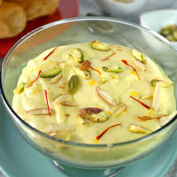

üçß Shreekhand

Ingredients
- 2 cups hung curd (thick yogurt)
- 1/2 cup powdered sugar
- 1/2 tsp cardamom powder
- 1 tbsp saffron strands (soaked in warm milk)
- 1/4 cup chopped pistachios or almonds (optional)
- 1 tbsp rose water (optional)
- Fresh fruits like mango, pomegranate, or cherries for garnish (optional)
Instructions
- In a mixing bowl, combine the hung curd with powdered sugar and whisk it until smooth and creamy.
- Add cardamom powder, saffron milk, and rose water (if using). Mix well to combine all the ingredients.
- Once well-mixed, transfer the shreekhand into serving bowls.
- Garnish with chopped pistachios, almonds, and fresh fruits like mango, pomegranate, or cherries for an added touch of flavor.
- Chill the shreekhand for at least 1 hour before serving to enhance the taste and texture.
- Serve chilled as a refreshing dessert.
Serve With
- Warm Puris (deep-fried bread)
- Fruits
üí° Tip: You can add a little mango puree for a Mango Shreekhand variant during the mango season.